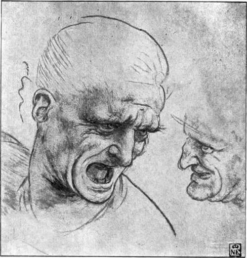
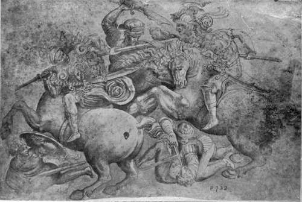

The Pictures. Part 8
Description
This section is from the book "Leonardo Da Vinci", by Edward McCurdy. Also available from Amazon: Leonardo Da Vinci.
The Pictures. Part 8
The native painters of Milan never became Florentine in method. It was the greater genius which proved the more assimilative. Leonardo's art had wrested from that of Vincenzo Foppa and Ambrogio Borgognone the secret of its strength, and had become its supreme logical development before the Milanese painters became his followers.
The difference in the position of the hands in the two pictures is of itself an index of the order of their composition.
In the Louvre picture the hand of the Madonna and that of the angel are seen one above the other in a vertical line above the figure of Christ.
The hand of the Madonna is extended in a very unusual manner. The fingers are held as widely apart as possible, and are seen coming forward in almost complete foreshortening.
The figure of God the Father was hardly ever represented in Art before the twelfth century, his presence being intimated by a hand. After the twelfth century the hand still remained the customary symbol of the presence of God the Father. It was represented either in the act of blessing or bestowing, being in the latter case " entirely open and darting rays from each finger as though it were a living sun," 1 the rays being symbolic of the grace and favour shed forth by God upon tne earth.
Plate 33. Study Of Heads For Combatants In "The Battle Of Anghiari"
Buda-Pesth Gallery
This so exactly describes the attitude of the hand of the Virgin that I cannot believe it to be merely a coincidence that it should extend thus over the head of Christ. Leonardo has placed the outstretched hand in this position as a symbol of the presence of God the Father.
In the earlier representations of the Trinity the presence of the Father is customarily revealed by a hand only, of the Son by the Cross, the Lamb or the human form, and of the Holy Ghost by the dove, the symbols being grouped either vertically or horizontally. The spirit of symbolism was a living thing seeking new garments. From the tenth to the end of the sixteenth century the figure of a man was used as an alternative symbol for the Holy Ghost.
The hand of the angel with outstretched forefinger is exactly in the position in which the dove would appear in a vertical representation of the Trinity. Above it is the symbol of God the Father, below it is God the Son.
I cannot find an instance of the use in Art of the forefinger as a symbol of the Third Person of the Trinity, but the symbol is not unknown in literature. In the hymn attributed to Charlemagne in honour of the Holy Spirit, "Veni Creator Spiritus," he invokes it as "Dextrae Dei tu digitus," " finger of the hand of God." There perhaps is a possible suggestion of such use in Art in the Byzantine Guide to Painting in the inscription for the representation of the Holy Spirit. " He which proceedeth from the Father," in conjunction with the use of the hand to represent the Father.
1 Didron, "Christian Iconography,"p..201.
May not Leonardo have been attempting, by the use of such a symbol in lieu of the dove, to represent the Trinity in the position of the two hands above Christ? His symbolism, in contrast with that of the Byzantines and the Primitives, is the less readily apparent because veiled in natural action.
But in this case the action is not entirely natural, and its real meaning being obscure,-some of " those people of importance" doubtless remarking how eminently Leonardesque it was to make the angel point at S. John- Leonardo, therefore, dissatisfied with the result, lowered the angel's hand in the composition of the National Gallery picture so that both hands support Christ, and altered the position of the hand of the Madonna so that it is no longer as though " darting rays from each finger," but the fingers held more together are turned aside with a natural gesture.
It is not possible to determine the precise date of composition of either picture. But internal evidence may be held to prove that the Louvre picture if not painted in Florence was painted very soon after Leonardo's arrival in Milan. Mr. Herbert P. Home has made the very interesting suggestion of its identity with the altar-piece which both the " Anonimo Fiorentino " and Vasari state was painted at the request of Ludovic, and afterwards sent by the Duke as a present to the Emperor. Vasari adds that the subject was a Nativity. The description, though loose, is perhaps sufficiently accurate in view of the fact that it is hardly possible that Vasari can ever have seen the picture.
Plate 34. Early Flemish Drawing Of The "Battle Of Anghiari" (The fight for the standard)
Phiipot photo - Uffizi Gallery, Florence
Fragments of letters by Leonardo reveal that the Duke was not a good paymaster, and that in consequence the artist was forced to take other commissions whereby he could earn money.
" It vexes me greatly that having to earn my living has forced me to interrupt the work and to attend to small matters, instead of following up the work which your lordship entrusted to me. But I hope in a short time to have earned so much that I may carry it out quietly to the satisfaction of your Excellency." 1 . . .
So also in the fragments of the torn letter2 written when all work for the Duke has been at a standstill, he says that he has been working to gain his living.
To such a necessity we may most reasonably attribute his association with Ambrogio de Predis in the contract with the brotherhood of S. Francesco.
The stern facts of his penury revealed in his letters may be held to countervail against any hypothetical considerations of the improbability of his ever painting two pictures which greatly resemble each other in composition.
Continue to:
Tags
leonardo da vinci, pictures, drawings, galleries, statues, da vinci